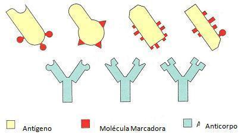
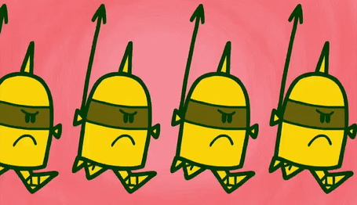

Os antígenos são as substâncias que estimulam a produção dos anticorpos e, além disso, que reagem especificamente com eles. Essa substância pode ser uma proteína, um polissacarídeo ou um complexo que contenha as duas substâncias citadas. Os antígenos, normalmente, são os vírus, as bactérias, substâncias presentes na saliva de insetos inoculadas por suas picadas, ou ainda por porções de alimentos que não são totalmente digeridas.
Os anticorpos são glicoproteínas produzidas quando a célula-mestra reconhece a presença de um antígeno. Essa, um linfócito, é um tipo de leucócito dividido em dois grupos que irão variar de acordo com a necessidade ou não da passagem pelo timo para a maturação.
A defesa corporal é realizada por um grupo de células específicas que atuam no processo de detecção do agente invasor, no seu combate e total destruição. Todo este processo é denominado de resposta imune.
Existem dois tipos de respostas imunes:
A Imunidade inata, natural ou não específica é a nossa primeira linha de defesa. Esse tipo de imunidade já nasce com a pessoa, representada por barreiras físicas, químicas e biológicas.
Ela inclui a pele, cílios, lágrima, muco, plaquetas, saliva, suco gástrico, suor. Também é representada pelas células de defesa, como leucócitos, neutrófilos e macrófagos.
Os principais mecanismos da imunidade inata são fagocitose, liberação de mediadores inflamatórios e ativação de proteínas.
Se a imunidade inata não funciona ou não é suficiente, a imunidade adaptativa entra em ação.
A Imunidade adquirida, adaptativa ou específica é a defesa adquirida ao longo da vida, tais como anticorpos e vacinas.
Constitui mecanismos desenvolvidos para expor as pessoas com o objetivo de fazer evoluir as defesas do corpo. A imunidade adaptativa age diante de algum problema específico.
Por isso, depende da ativação de células especializadas, os linfócitos.
Existem dois tipos de imunidade adquirida:
Imunidade humoral: depende do reconhecimento dos antígenos, através dos linfócitos B.
Imunidade celular: mecanismo de defesa mediado por células, através dos linfócitos T.